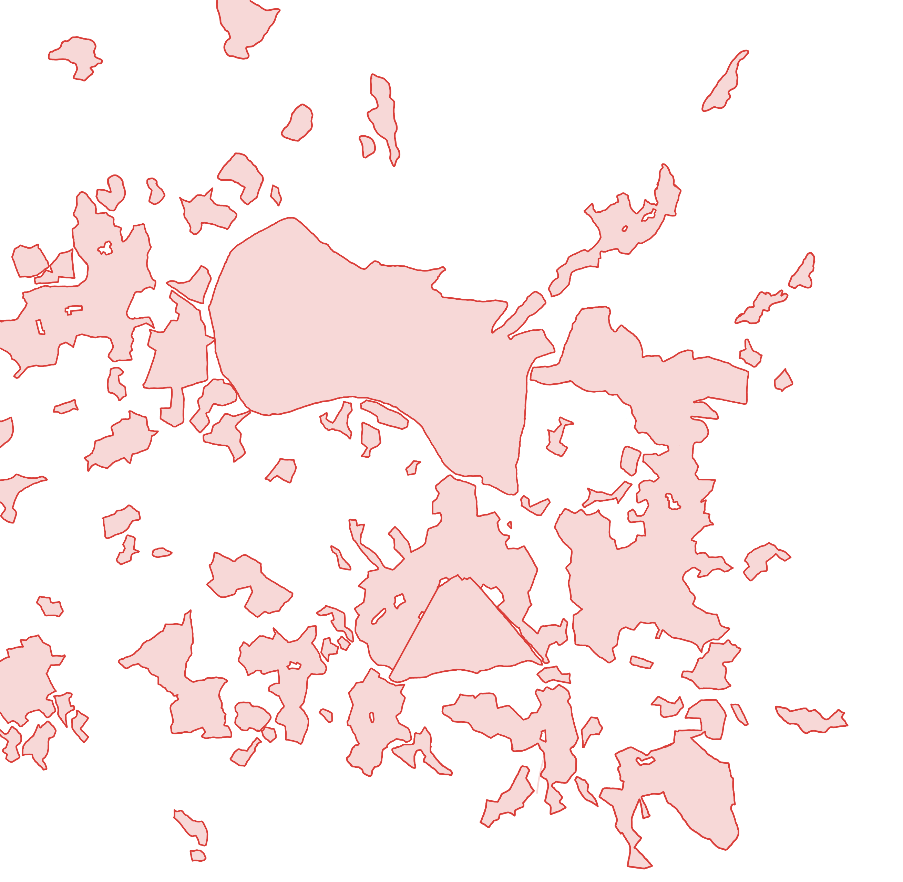
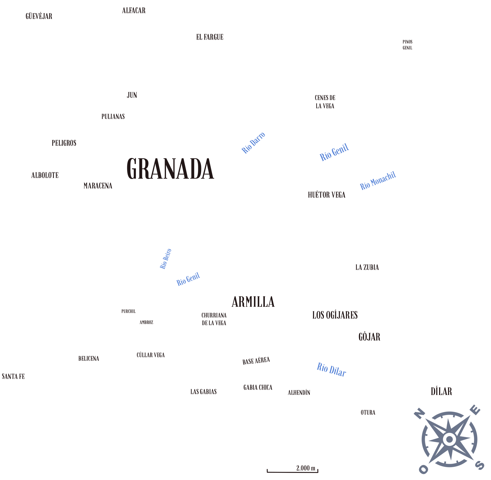
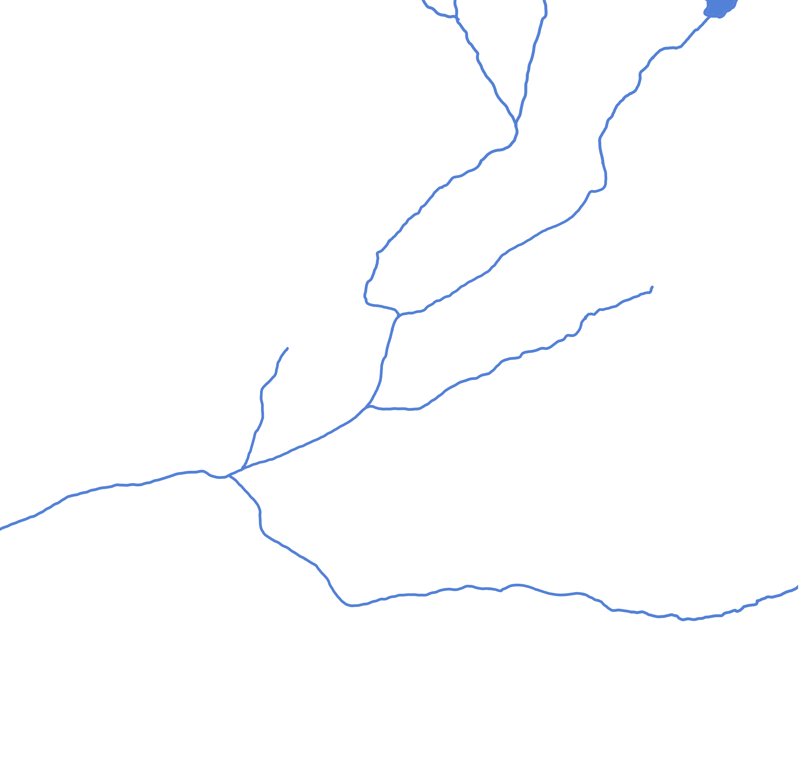
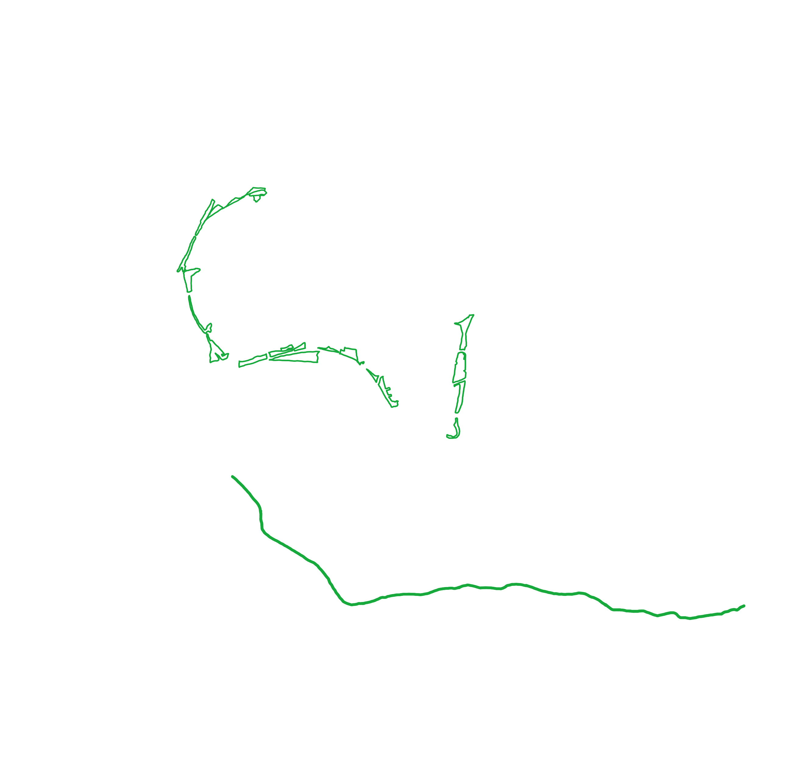
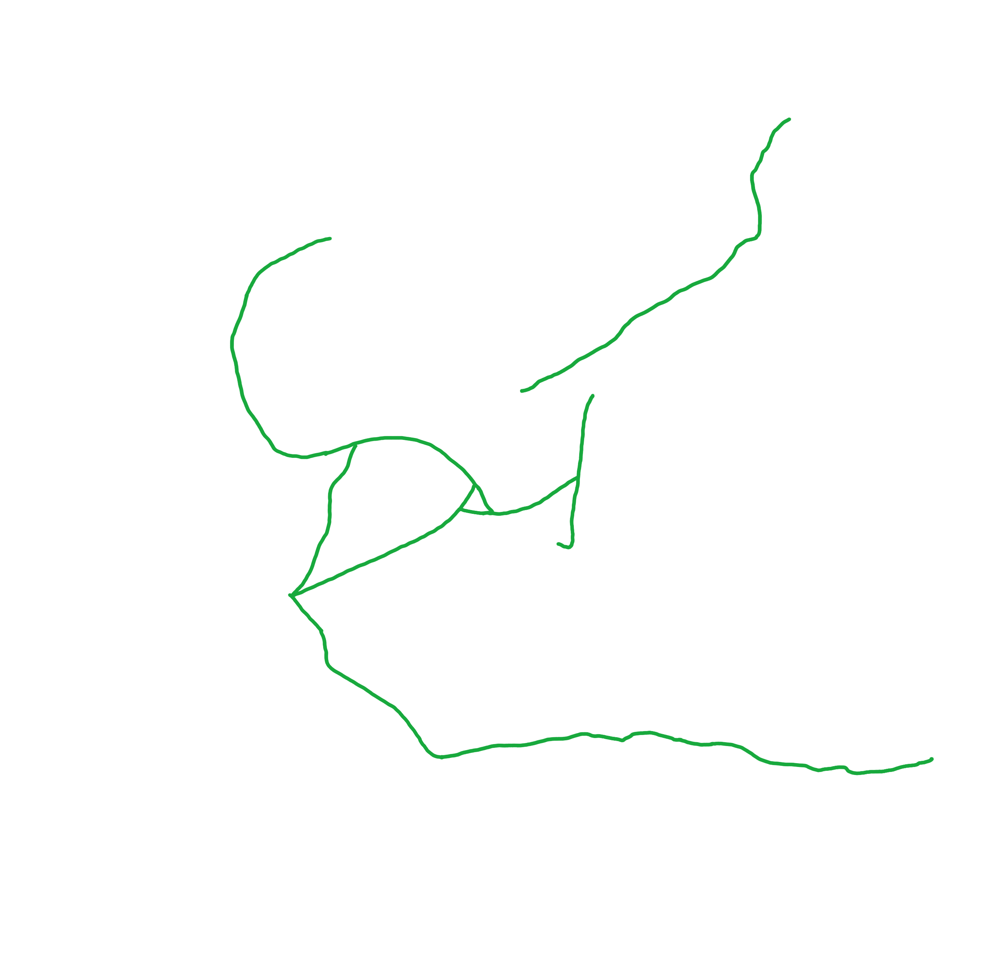
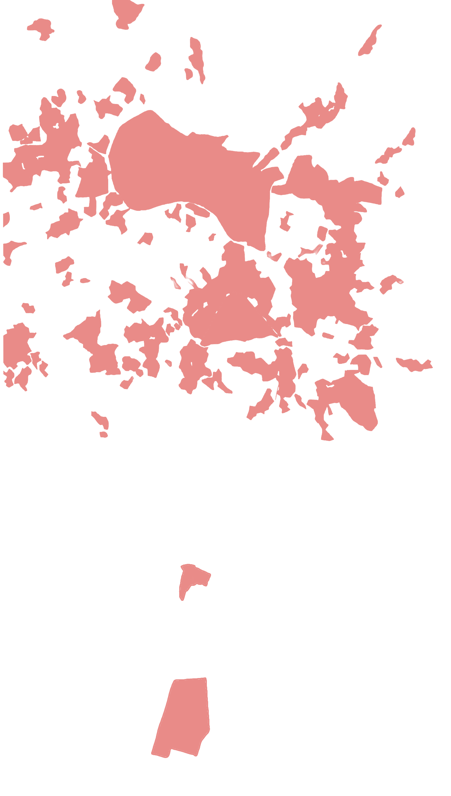
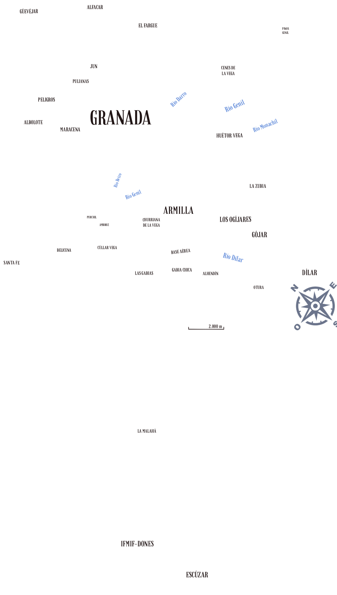
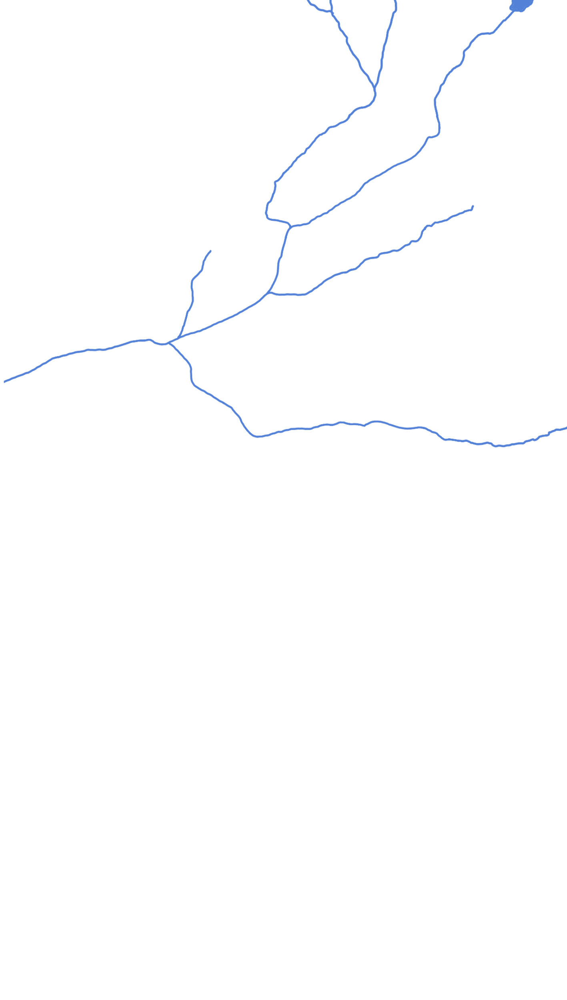
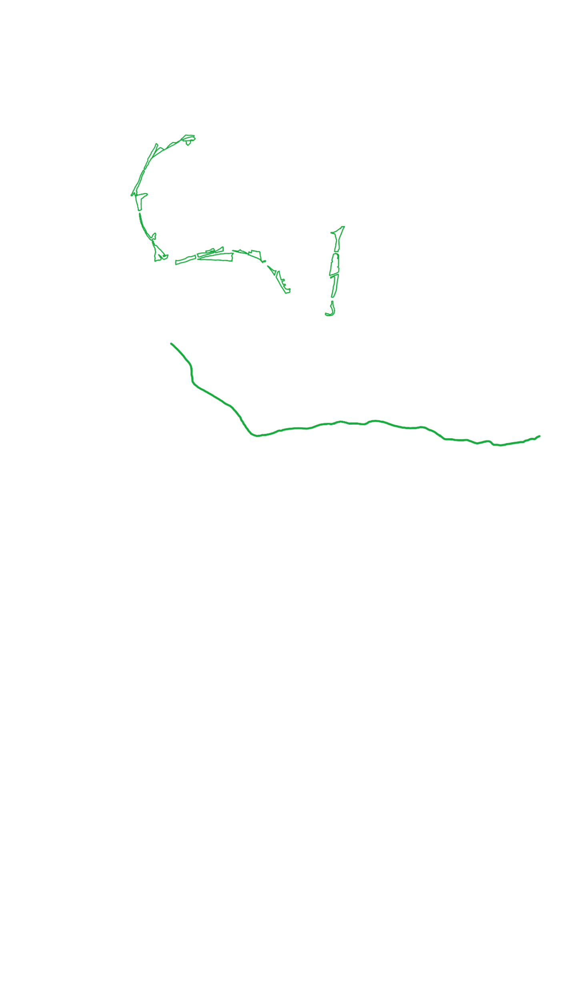
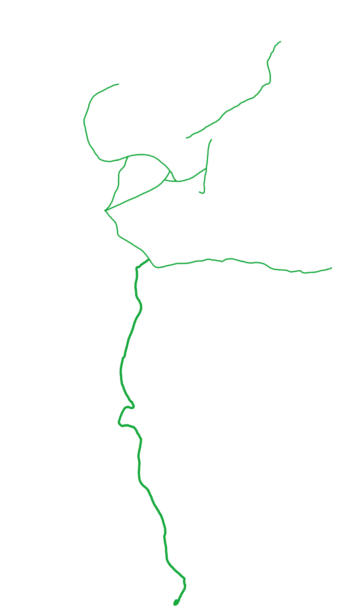

Anillo Verde Granada





Anillo Verde Granada extendido





Una propuesta para conectar 17 municipios de Granada con un anillo de caminos verdes accesibles.
Proyecto coordinado por la UGR en colaboración con Ayuntamiento de Granada, Diputación de Granada y La Huella Verde.